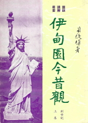

一 創世記(上)
- 要有光就有了光
- 主是我們的太陽 -- 真光
- 主是世界的光
- 基督徒是世上的光
- 發不出光的三大原因
- 從神的創造看基督徒七級靈程
- 安息日與主日
- 伊甸園今昔觀 -- 衣與食
- 伊甸園今昔觀 -- 權與責
- 伊甸園今昔觀 -- 死與生
- 伊甸園今昔觀 -- 恩與仇
- 伊甸園今昔觀 -- 愛與恨
- 伊甸園今昔觀 -- 罪與罰
- 夫婦之道
- 伊甸園中四個問題
- 伊甸園外四個問題
- 該隱道路的特徵
- 塞特家族的特徵
- 挪亞的日子
- 挪亞的信愛望
- 奇妙的方舟
- 審判的洪水
- 兩種基督徒 -- 鴉派與鴿派
- 馨香之祭
- 更新的福
- 虹 -- 蒙福的確據
- 美中不足的挪亞
- 巴別塔
- 離開迦勒底入迦南
- 迦勒底
- 馨香之祭
- 迦南 -- 應許之地